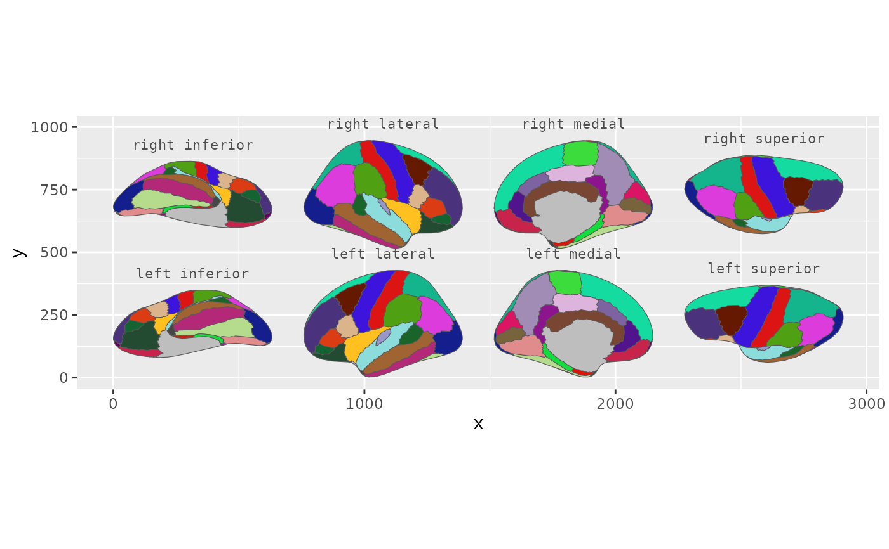
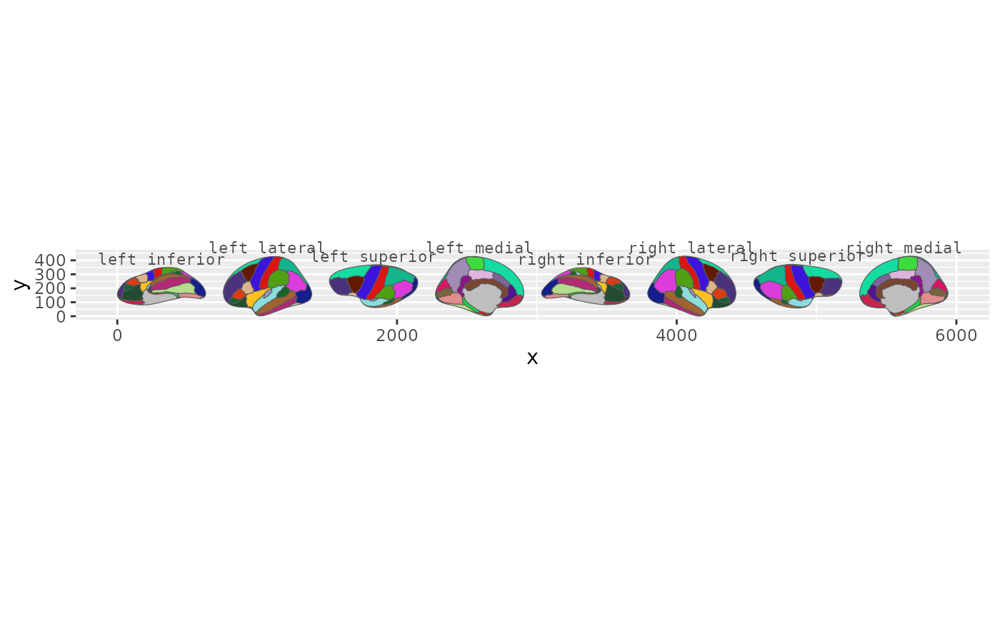

Annotates each brain view with a text label positioned above the view's bounding box. For cortical atlases, labels show hemisphere and view (e.g., "left lateral"). For subcortical and tract atlases, labels show the view name directly (e.g., "axial_1", "sagittal").
Usage
annotate_brain(
atlas,
position = position_brain(),
hemi = NULL,
view = NULL,
size = 3,
colour = "grey30",
family = "mono",
padding = 0.05,
nudge_y = 0,
...
)Arguments
- atlas
A `brain_atlas` object (e.g. `dk()`, `aseg()`).
- position
The same layout you passed to [geom_brain()], from [position_brain()].
- hemi
Character vector of hemispheres to include. If `NULL` (default), all hemispheres are included.
- view
Character vector of views to include. If `NULL` (default), all views are included.
- size
Text size in mm (default: `3`).
- colour
Text colour (default: `"grey30"`).
- family
Font family (default: `"mono"`).
- padding
Vertical gap between each label and its view, as a fraction of the plot's total height (default: `0.05`). Labels are also bottom-anchored (`vjust = 0`) so they sit clear of the geometry.
- nudge_y
Additional absolute vertical offset for labels (default: `0`).
- ...
Additional arguments passed to [ggplot2::annotate()].
Details
Pass the same `position` you gave [geom_brain()] and the labels line up with the views automatically.
Examples
library(ggplot2)
pos <- position_brain(hemi ~ view)
ggplot() +
geom_brain(atlas = dk(), position = pos, show.legend = FALSE) +
annotate_brain(atlas = dk(), position = pos)

ggplot() +
geom_brain(atlas = dk(), show.legend = FALSE) +
annotate_brain(atlas = dk())
